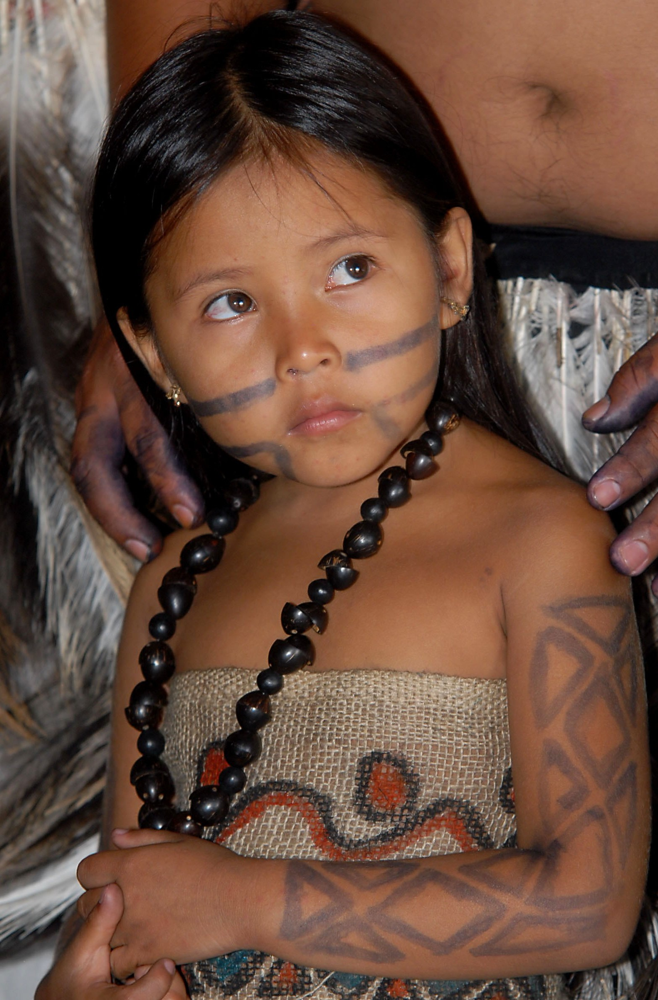
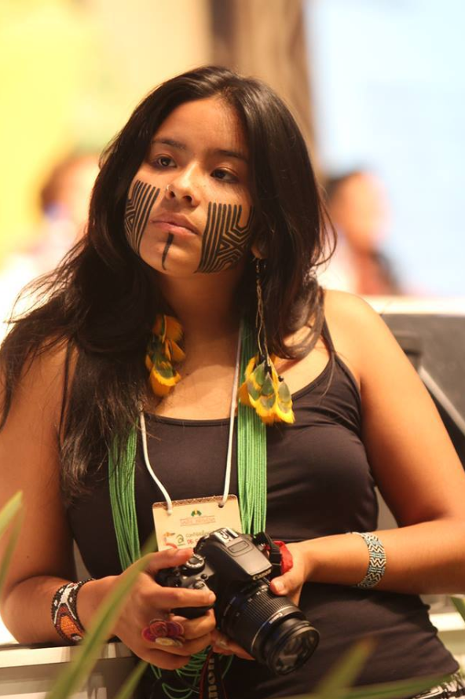

História Bakairi.
 Em 1999, o país possuía 950 integrantes do povo Bakairi. Os Bakairi ou Bakairi se intitulam Kurâ, que significa gente, ser humano. Eles residem no centro do estado brasileiro de Mato Grosso, sobretudo nas Terras Indígenas Santana (Iemârire) e Bakairi.
Em 1999, o país possuía 950 integrantes do povo Bakairi. Os Bakairi ou Bakairi se intitulam Kurâ, que significa gente, ser humano. Eles residem no centro do estado brasileiro de Mato Grosso, sobretudo nas Terras Indígenas Santana (Iemârire) e Bakairi.
História Terena
Os Terena são um grupo entre os quatro subgrupos Guaná. O Chaco Boreal, com cerca de 600.000 km2, forma a maior parte do território do Paraguai e estende-se até o Pantanal, no Mato Grosso do Sul, sendo uma parte do Gran Chaco. Mais de vinte povos indígenas viviam nessa área. Entre eles, os Guaná, um povo agricultor e mais pacífico do que seus vizinhos, os Guaikuru.
Cultura Bakairi.
.jpg) A arte Bakairi expressa em todos os artefatos temas que remetem ao mundo espiritual, sobretudo nos trançados, nas pás para virar beiju, nos banquinhos zoomorfos e nas pinturas feitas com jenipapo, urucum e tabatinga, um tipo de barro branco. Esta característica espiritualiza as coisas materiais e materializa as coisas espirituais.
A arte Bakairi expressa em todos os artefatos temas que remetem ao mundo espiritual, sobretudo nos trançados, nas pás para virar beiju, nos banquinhos zoomorfos e nas pinturas feitas com jenipapo, urucum e tabatinga, um tipo de barro branco. Esta característica espiritualiza as coisas materiais e materializa as coisas espirituais.
Cultura Terena.
 Segundo suas crenças, o povo Terena surgiu depois que o herói chamado Yurikoyuvakái tirou-os de debaixo terra e, então, ensinou-lhes sobre o uso do fogo e das ferramentas agrícolas.
Segundo suas crenças, o povo Terena surgiu depois que o herói chamado Yurikoyuvakái tirou-os de debaixo terra e, então, ensinou-lhes sobre o uso do fogo e das ferramentas agrícolas.
Terena e Bakairi no Brasil
Com uma população estimada em 16 mil pessoas em 2001, os Terena, povo de língua Aruák, vivem atualmente em um território descontínuo, fragmentado em pequenas “ilhas” cercadas por fazendas e espalhadas por sete municípios sul-matogrossenses: Miranda, “Aquidauana”, Anastácio, Dois Irmãos do Buriti, Sidrolândia, Nioaque e Rochedo. Também há famílias terena vivendo em “Porto Murtinho” (na Terra Indígena Kadiweu) e no estado de São Paulo.
Demarcação Territorial Indígena
 A Constituição de 1988, garantiu o direito a terra dos indígenas , anterior à criação do próprio Estado - reconhecendo o contexto histórico de que os índios foram os primeiros ocupantes do Brasil.
A Constituição de 1988, garantiu o direito a terra dos indígenas , anterior à criação do próprio Estado - reconhecendo o contexto histórico de que os índios foram os primeiros ocupantes do Brasil.
Conquista do povo Indígena.
Em 23 de setembro de 2007 foi aprovada pela ONU em Nova York, a Declaração das Nações Unidas Unidas sobre Direitos dos Povos Indígenas. O texto, extremamente avançado, reflete o conjunto das reivindicações atuais dos povos indígenas em todo o mundo acerca da melhoria de suas relações com os Estados nacionais e serve para estabelecer parâmetros mínimos para outros instrumentos internacionais e leis nacionais.
Índio no século XXI.
 A situação dos indígenas no Brasil vem de inúmeras características e eventos históricos ocorridos na história de nosso país.
A situação dos indígenas no Brasil vem de inúmeras características e eventos históricos ocorridos na história de nosso país.
Mulheres Indígenas na Atualidade.
Desde o Brasil colonial até os dias atuais, é explícito como os estereótipos a respeito das mulheres indígenas estão incorporados na mente de grande parte da sociedade, isto é, como no contexto atual atribuímos um padrão a estas mulheres, baseando-se no período colonial.
Informações Importantes
Os índios umutinas de Mato Grosso não falam mais diariamente a língua original. Eles adotaram o português como idioma oficial na aldeia localizada próximo ao município de Barra do Bugres, à beira do Rio Paraguai, distante 160 km de Cuiabá. O resgate da linguagem tradicional é um dos desafios para os 150 alunos da escola indígena da aldeia.